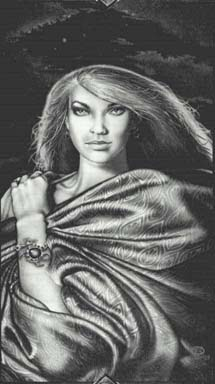

Фиона(Фи) Рыжие волосы, зеленые глаза, 5'2 ".Цвета одежды: зеленый, бледно-лиловый, фиолетовый. В прошлом более активно, чем когда-либо, участвовала в событиях Амбера. Сейчас питает особый интерес к Мерлину. Фиона начала понимать суть интриг в Амбере. Саркастичная, остроумная и способная быть невероятно несносной, Фиона была противником Корвина во времена Междуцарствия, но кажется, с легкостью приняла правление Рэндома. Может быть потому, что Рэндом в эпоху битвы Корвина с Хаосом предупредил ее об опасности далеко за пределами Янтарного двора. Как бы там ни было, она решительно помогает Мерлину любыми доступными ей способами. |
 |